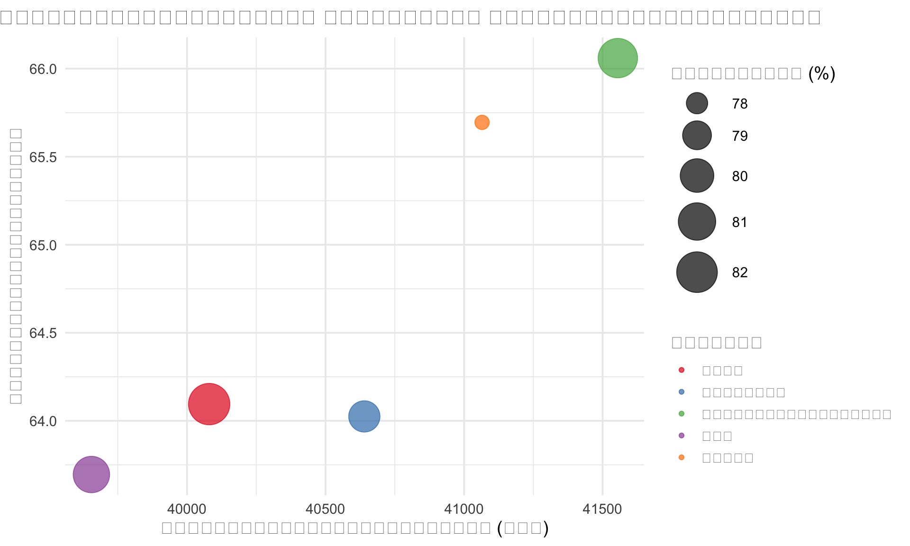

การวิเคราะห์ข้อมูลการศึกษา: มุมมองเชิงลึก
นำเสนอด้วย Quarto Scrollytelling
Your Name
เริ่มต้นการเดินทาง
ความท้าทายในระบบการศึกษาไทย
<div class="step" data-index="0">
<h3>การเข้าถึงการศึกษาที่มีคุณภาพ</h3>
<p>ความเหลื่อมล้ำในการเข้าถึงการศึกษาที่มีคุณภาพยังคงเป็นปัญหาสำคัญของประเทศไทย</p>
</div>
<div class="step" data-index="1">
<h3>ผลสัมฤทธิ์ทางการเรียนที่แตกต่างกัน</h3>
<p>การวิเคราะห์ข้อมูลแสดงให้เห็นความแตกต่างของผลสัมฤทธิ์ระหว่างภูมิภาค</p>
</div>
<div class="step" data-index="2">
<h3>ทรัพยากรที่ไม่เท่าเทียม</h3>
<p>การจัดสรรงบประมาณและทรัพยากรที่ไม่เท่าเทียมส่งผลต่อคุณภาพการศึกษา</p>
</div>::: {.cell}
::: {.cell-output-display}
{width=100%}
:::
:::แนวโน้มระดับประเทศ
ผลการเรียนรู้และปัจจัยที่เกี่ยวข้อง
<div class="step" data-index="0">
<h3>แนวโน้มคะแนนการทดสอบ 5 ปีย้อนหลัง</h3>
<p>คะแนนคณิตศาสตร์มีแนวโน้มเพิ่มขึ้นเล็กน้อย แต่ยังไม่ถึงเป้าหมายที่กำหนด</p>
</div>
<div class="step" data-index="1">
<h3>ความสัมพันธ์ระหว่างงบประมาณและผลสัมฤทธิ์</h3>
<p>พบความสัมพันธ์เชิงบวกระหว่างงบประมาณต่อนักเรียนและผลการเรียน</p>
</div>
<div class="step" data-index="2">
<h3>อัตราส่วนครูต่อนักเรียนและผลกระทบ</h3>
<p>โรงเรียนที่มีอัตราส่วนครูต่อนักเรียนต่ำ (มีครูมากขึ้น) มีแนวโน้มให้ผลลัพธ์ที่ดีกว่า</p>
</div>::: {.cell}
::: {.cell-output-display}
```{=html}
<div class="trend-tabs">
<ul class="nav nav-tabs" role="tablist">
<li class="nav-item" role="presentation">
<button class="nav-link active" id="trend-tab1" data-bs-toggle="tab" data-bs-target="#trend-content1" type="button" role="tab">แนวโน้ม 5 ปี</button>
</li>
<li class="nav-item" role="presentation">
<button class="nav-link" id="trend-tab2" data-bs-toggle="tab" data-bs-target="#trend-content2" type="button" role="tab">งบประมาณ vs. ผลลัพธ์</button>
</li>
<li class="nav-item" role="presentation">
<button class="nav-link" id="trend-tab3" data-bs-toggle="tab" data-bs-target="#trend-content3" type="button" role="tab">อัตราส่วนครู</button>
</li>
</ul>
<div class="tab-content">
<div class="tab-pane fade show active" id="trend-content1" role="tabpanel">
<div class="shiny-plot-output html-fill-item" id="out20f24182df19f5e6" style="width:100%;"></div>
</div>
<div class="tab-pane fade" id="trend-content2" role="tabpanel">
<div class="shiny-plot-output html-fill-item" id="out079dcfb3ea517816" style="width:100%;"></div>
</div>
<div class="tab-pane fade" id="trend-content3" role="tabpanel">
<div class="shiny-plot-output html-fill-item" id="out4d7a4e977474d6cd" style="width:100%;"></div>
</div>
</div>
</div>
```
:::
:::การวิเคราะห์เชิงพื้นที่
ความเหลื่อมล้ำทางภูมิศาสตร์
<div class="step" data-index="0">
<h3>การกระจายทรัพยากรทางการศึกษา</h3>
<p>งบประมาณต่อนักเรียนมีความแตกต่างกันอย่างมีนัยสำคัญระหว่างภูมิภาค</p>
</div>
<div class="step" data-index="1">
<h3>ช่องว่างด้านคุณภาพการศึกษา</h3>
<p>ภูมิภาคที่มีทรัพยากรน้อยมักมีผลสัมฤทธิ์ทางการเรียนต่ำกว่าค่าเฉลี่ย</p>
</div>
<div class="step" data-index="2">
<h3>โอกาสในการเข้าถึงการศึกษาคุณภาพสูง</h3>
<p>อัตราการจบการศึกษาแตกต่างกันไปตามภูมิภาคและทรัพยากรที่มี</p>
</div>::: {.cell}
::: {.cell-output-display}
{width=100%}
:::
:::ข้อเสนอแนะเชิงนโยบาย
แนวทางการพัฒนาระบบการศึกษา
<div class="step" data-index="0">
<h3>การกระจายทรัพยากรอย่างเท่าเทียม</h3>
<p>จัดสรรงบประมาณเพิ่มเติมให้กับพื้นที่ที่มีความต้องการสูงและยกระดับสัดส่วนครูต่อนักเรียน</p>
</div>
<div class="step" data-index="1">
<h3>การพัฒนาคุณภาพการเรียนการสอน</h3>
<p>ลงทุนในการพัฒนาครู และปรับปรุงหลักสูตรให้สอดคล้องกับความต้องการของตลาดแรงงาน</p>
</div>
<div class="step" data-index="2">
<h3>การใช้เทคโนโลยีและข้อมูลเพื่อการตัดสินใจ</h3>
<p>พัฒนาระบบติดตามและประเมินผลที่มีประสิทธิภาพเพื่อการปรับปรุงอย่างต่อเนื่อง</p>
</div>::: {.cell}
::: {.cell-output-display}
{width=100%}
:::
:::สรุปและถามตอบ
การสังเคราะห์ผลการวิเคราะห์
- ความเหลื่อมล้ำทางการศึกษา ยังคงเป็นปัญหาสำคัญที่ต้องได้รับการแก้ไข
- การจัดสรรทรัพยากร ที่เหมาะสมจะช่วยลดช่องว่างระหว่างภูมิภาค
- การพัฒนาครู เป็นปัจจัยสำคัญในการยกระดับคุณภาพการศึกษา
- เทคโนโลยีและข้อมูล เป็นเครื่องมือที่มีประสิทธิภาพในการขับเคลื่อนการเปลี่ยนแปลง
ขอบคุณ
ติดต่อ
ขอบคุณสำหรับความสนใจ หากมีคำถามหรือข้อเสนอแนะเพิ่มเติม กรุณาติดต่อ:
- อีเมล: your.email@example.com
- เว็บไซต์: www.example.com
- โทรศัพท์: 02-XXX-XXXX